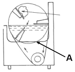
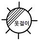

세탁기능사 (2009-01-18 기출문제)
1과목: 세정이론
1. 다음 중 오염이 가장 잘 제거되는 섬유는?
- 양모
- 면
- 견
- 비닐론
(정답률: 88%)

2. 재오염에 관한 설명 중 틀린 것은?
- 세정액은 계속적으로 청정화시키면서 반복 사용하기 때문에 오염물질이 용제 중에 축적 되지 않는다.
- 재오염이란 의류가 세정과정에서 용제 중에 분산된 더러움이 의류에 다시 부착되는 현상이다.
- 소프를 사용하면 세정력이 강화되고 재오염을 저하시킨다.
- 흡착에 의한 재오염은 깨끗한 용제로 헹구어도 제거 가 어려운 경우가 많다.
(정답률: 58%)
3. 퍼클로로에틸렌의 특성 중 틀린 것은?
- 독성이 크다.
- 인화, 폭발의 위험성이 없다.
- 세척력이 석유계 용제에 비해 우수하다.
- 섬세한 고급 의복에 적합하다.
(정답률: 45%)
4. 흡착제이면서 탈색력이 뛰어난 청정제에 해당되지 않는 것은?
- 활성탄소
- 규조토
- 실리카겔
- 산성백토
(정답률: 69%)
5. 과산화수소를 사용했을 때 표백효과가 가장 큰 섬유는?
- 모
- 면
- 아세테이트
- 아크릴
(정답률: 50%)
6. 클리닝 처리 전 사전진단에 관한 사항 중 틀린 것은?
- 고객으로부터 충분한 정보를 얻는다.
- 고객 앞에서 반드시 확인한다.
- 가능한 한 정밀하게 진단한다.
- 진단 결과를 고객에게 설명할 필요가 없다.
(정답률: 88%)
7. 기술진단 중 사무진단이 아닌 것은?
- 의류물품의 종류, 수량, 색상
- 의류부속품의 유무
- 의류에 부착된 장식 단추
- 의류의 변형에 관한사항
(정답률: 67%)
8. 보일러의 분류 중 원통 보일러에 해당되는 것은?
- 자연순환식 수관보일러
- 노통연관 보일러
- 강제순환식 수관보일러
- 관류 보일러
(정답률: 83%)
9. 다음 중 비이온계 계면활성제에 해당되는 것은?
- 피리디늄염
- 알킬벤젠술폰산나트륨
- 4차암모늄염
- 디에탄올아미드
(정답률: 44%)
10. 계면활성제에 대한 설명 중 틀린 것은?
- 물의 표면장력을 증가시켜 준다.
- 친수기와 친유기를 함께 가지고 있다.
- 직물에 묻은 오염물질을 유화 분산시킨다.
- 기포성을 증가하고 세척작용을 향상시킨다.
(정답률: 79%)
11. 다음 중 세정액의 청정화 방법이 아닌 것은?
- 여과방법
- 탈색방법
- 흡착방법
- 증류방법
(정답률: 78%)
12. 다음 중 방수가공제에 해당되는 것은?
- 실리카겔
- 염화칼슘
- 아크릴수지
- 과산화수소
(정답률: 74%)
13. 게이지의 압력이 6kg/cnf인 보일러의 절대압력(kg/cm2)은?
- 4
- 5
- 6
- 7
(정답률: 86%)
14. 다음 중 웨트클리닝 대상품이 아닌 것은?
- 슈트나 한복제품
- 합성수지 제품
- 고무를 입힌 제품
- 수지안료 가공제품
(정답률: 81%)
15. 다음 중 흡착에 의한 재오염에 해당되지 않는 것은?
- 정전기
- 점착
- 물의적심
- 염료
(정답률: 75%)
16. 표백제의 분류 중 잘못 연결된 것은?
- 염소계 표백제 - 표백분, 하이포아염소산나트륨, 아 염소산나트륨
- 과산화물계 표백제 - 과산화수소, 과붕산나트륨, 과탄산나트륨
- 환원표백제 - 유기염소표백제, 과산화아세트산, 과망간산나트륨
- 표백제 - 산화표백제, 환원표백제
(정답률: 67%)
17. 다음 중 용제의 구비조건이 아닌 것은?
- 증류나 흡착에 의한 정제가 쉽고 분해가 될 것
- 세탁 시 피복을 손상시키지 않을 것
- 기계를 부식시키지 않고 인체에 독성이 없을 것
- 건조가 쉽고 세탁 후 냄새가 없을 것
(정답률: 68%)
18. 다음 중 중성세제의 가장 적당한 pH는?
- 7
- 9
- 11
- 13
(정답률: 59%)
19. 비누의 특성 중 장점에 해당되는 것은?
- 가수분해되어 유리지방산을 생성한다.
- 센물에 반응하여 침전물을 만든다.
- 거품이 잘 생기고 헹굴 때에는 거품이 사라진다.
- 산성용액에서는 사용할 수 없다.
(정답률: 82%)
20. 기술진단이 필요한 품목의 분류가 틀린 것은?
- 고액 상품류 - 모피제품, 고급한복
- 파일 제품류 - 벨벳제품, 롱파일 제품
- 론드리 대상품류 - 접착제품, 합성피혁
- 염색 특수품류 - 날염제품, 털 심은 제품
(정답률: 61%)
2과목: 기술관리
21. 다음 섬유 중 론드리 대상품으로 적당한 것은?
- 견
- 면
- 양모
- 마
(정답률: 64%)
22. 론드리에서 본빨래를 할 때 세제의 pH로 가장 적당한 것은?
- pH 1~2
- pH 4~5
- pH 7~8
- pH 10~11
(정답률: 81%)
23. 론드리 세탁방법의 장점이 아닌 것은?
- 세탁온도가 높아 세탁효과가 좋다.
- 표백이나 풀먹임이 효과적이며 용이하다.
- 수질오염방지 등 배수시설이 필요 없어 원가가 낮다.
- 알칼리제를 사용하므로 오점이 잘 빠진다.
(정답률: 76%)
24. 증류법에 대한 설명으로 틀린 것은?
- 최근 핫머신에는 증류장치가 붙어 있어 자동적으로 증류가 되도록 되어있다.
- 석유계 용제는 대기압 하에서 증류가 가능하며 온도가 140℃ 이상에서 행해진다.
- 여과나 침전법에 의한 청정방법의 한계를 증류법으로 개선할 수 있다.
- 퍼클로로에틸렌은 끓는점이 121.5℃로 대기압에서 쉽게 증류된다.
(정답률: 58%)
25. 드라이클리닝에서 용제의 상대습도로 가장 알맞은 것은?
- 30~35%
- 50~55%
- 70~75%
- 80~85%
(정답률: 59%)
26. 석유계 용제용 드라이클리닝에 사용되는 세탁기에 가장 중요한 장치에 해당되는 것은?
- 방폭장치
- 세척장치
- 정제장치
- 가열장치
(정답률: 71%)
27. 얼룩빼기 방법 중 물리적 방법이 아닌 것은?
- 알칼리를 사용하는 방법
- 기계적 힘을 이용하는 방법
- 분산법
- 흡착법
(정답률: 67%)
28. 웨트클리닝의 탈수와 건조에 대한 설명으로 틀린 것은?
- 형의 망가짐에 상관없이 강하게 원심 탈수한다.
- 늘어날 위험이 있는 것은 평평한 곳에 뉘어서 말린다.
- 건조는 될 수 있는 대로 자연 건조를 한다.
- 색빠짐에 우려가 있는 것은 타월에 싸서 가볍게 손으로 눌러 짠다.
(정답률: 75%)
29. 론드리의 본빨래 설명으로 틀린 것은?
- 본빨래는 1회보다 2~3회에 걸쳐하는 것이 좋다.
- 비누 농도는 1회 때 0.3%, 2회 때 0.2%, 3회 때 0.1%와 같은 비율로 점차 감소한다.
- 본빨래의 욕비는 1:4로 한다.
- 70℃ 이상의 고온세탁을 해야 세탁효과가 높다.
(정답률: 66%)
30. 다음 그림은 론더링에 시용하는 와셔이다. A부분의 명칭은?

- 세탁물
- 회전드럼
- 펄세이터
- 열풍기
(정답률: 74%)
31. 다음 중 풀먹임 작용의 효과가 아닌 것은?
- 천을 하얗고 광택 있게 한다.
- 오점이 섬유에 직접 붙지 않도록 한다.
- 천을 질기게 하고 내구성을 좋게 한다.
- 천에 황변을 방지하고 산가용성의 얼룩을 제거한다.
(정답률: 60%)
32. 다음 그림은 섬유의 건조방법 중 어떠한 방법인가?

- 옷걸이에 걸어서 일광에 건조 시킬 것
- 옷걸이에 걸어서 그늘에서 건조 시킬 것
- 일광에 뉘어서 건조 시킬 것
- 그늘에서 뉘어서 건조 시킬 것
(정답률: 83%)
33. 다음 중 공기의 압력과 스팀을 이용하여 오점을 불어 제거하는 얼룩빼기 기계는?
- 제트스포트
- 스파팅 머신
- 초음파 얼룩빼기 기계
- 콜드 머신
(정답률: 63%)
34. 다음 중 다림질의 목적으로 틀린 것은?
- 디자인 실루엣의 기능을 복원시킨다.
- 의복의 필요한 부분에 주름을 만든다.
- 살균과 소독의 효과를 얻는데 있다.
- 다른 오물도 팽윤하여 본빨래에서 떨어지기 쉽게 한다.
(정답률: 75%)
35. 다음 중 세탁의 기본원리에 해당되지 않는 것은?
- 침투작용
- 흡착작용
- 분산작용
- 응고작용
(정답률: 86%)
36. 직물의 조직 중 밀도는 가장 높게 할 수 있으나 마찰에 약한 조직은?
- 평직
- 능직
- 주자직
- 사직
(정답률: 51%)
37. 다음 중 합성섬유의 일반적인 성질이 아닌 것은?
- 흡습성이 낮다.
- 필링성이 작다.
- 열에 약하다.
- 비중이 낮다.
(정답률: 51%)
38. 양모섬유와 약품과의 관계가 옳은 것은?
- 산에는 비교적 강한 편이다.
- 알칼리에는 비교적 강한 편이다.
- 산과 알칼리에 모두 강한 편이다.
- 산과 알칼리에 모두 약한 편이다.
(정답률: 67%)
39. 직물의 수축을 방지하기 위하여 제직 후 수축분을 미리 수축시키는 가공 방법은?
- 방축가공
- 방오가공
- 방추가공
- 방수가공
(정답률: 77%)
40. 다음 중 공정수분율이 가장 높은 섬유는?
- 나일론
- 비스코스레이온
- 아크릴
- 폴리에스테르
(정답률: 52%)
3과목: 클리닝대상품
41. 다음 중 견섬유의 주성분에 해당되는 것은?
- 셀룰로스
- 케라틴
- 피브로인
- 세리신
(정답률: 64%)
42. 다음 중 재생섬유의 주원료는?
- α -셀룰로스
- β-셀룰로스
- 해미 셀룰로스
- 리그노 셀룰로스
(정답률: 81%)
43. 다음 중 가장 가는 양털에 속하는 것은?
- 색스니
- 햄프셔
- 링컨
- 코리데일
(정답률: 57%)
44. 실의 품질을 표시하는 기준 항목으로만 되어 있는 것은?
- 섬유의 혼용를, 실의 번수
- 섬유의 가공방법, 섬유의 지름
- 섬유의 생산지, 섬유의 너비
- 섬유의 혼용률, 치수 또는 호수
(정답률: 77%)
45. 피혁의 세탁방법에 대한 설명으로 틀린 것은?
- 치수변화를 최소화하기 위해서 가능한 물세탁을 한다.
- 염료가 용출되어 색상이 변할 수 있으므로 짧은 시간에 세탁을 마쳐야 한다.
- 탈지성이 적은 석유계 용제를 사용하는 것이 좋다.
- 세탁하면 원래의 품질보다 떨어지게 되므로 사용 중 청결을 유지하도록 관리하는 것이 좋다.
(정답률: 69%)
46. 다음 중 저마 섬유에 대한 설명으로 옳은 것은?
- 현미경으로 관찰하면 측면은 리본모양으로 되어 있고, 꼬임이 있다.
- 열 전도성이 적어서 보온성이 좋다.
- 삼베라고도 하며 섬유의 단면은 삼각형이고 측면에는 마디와 선이 있다.
- 모시라고도 하며 오래전부터 여름 한복감으로 사용되었다.
(정답률: 81%)
47. 다음 중 양모 섬유로서 품질이 가장 우수한 것은?
- 재래종
- 잡종
- 산악종
- 메리노종
(정답률: 74%)
48. 폴리에스테르계 섬유에 주로 사용되는 염료는?
- 산성염료
- 황화염료
- 직접염료
- 분산염료
(정답률: 85%)
49. 비스코스레이온의 용도로서 가장 적당한 것은?
- 숙녀복
- 책상보
- 운동복
- 안감
(정답률: 75%)
50. 다음 중 직물의 설명에 해당되지 않는 것은?
- 경사와 위사가 직각으로 이루어진 형태이다.
- 경사와 위사가 교차하는 방법에 따라 여러 가지 무늬를 얻을 수 있다.
- 직물의 3원조직은 평직, 능직, 주자직이 있다.
- 세 가닥 또는 그 이상의 실로 닿은 것도 있다.
(정답률: 57%)
51. 다음 중 평직의 특성으로 옳은 것은?
- 최소 3올 이상으로 구성된다.
- 직물의 광택이 우수하다.
- 앞뒤의 구별이 있다.
- 조직점이 많아서 얇으면서 강직하다.
(정답률: 57%)
52. 나일론 섬유의 특성으로 틀린 것은?
- 나일론 6과 나일론 66 이 있는데 국내에서는 주로 나일론 6이 생산되고 있다.
- 염소계 표백제에는 비교적 안정하므로 표백제로 사용한다.
- 용도는 강신도가 커서 양말, 스타킹, 기타 의류에 사용한다.
- 내일광성이 불량하여 직사광선을 쬐면 급속히 강도가 저하한다.
(정답률: 54%)
53. 다음 중 한 가닥의 실이 고리를 형성해가면서 좌우로 왕복하거나 원형으로 회전하면서 천을 형성하는 것은?
- 직물
- 편성물
- 레이스
- 부직포
(정답률: 68%)
54. 섬유의 연소시험 확인 방법 중 종이 타는 냄새가 나는 섬유가 아닌 것은?
- 아세테이트
- 면
- 마
- 비스코스레이온
(정답률: 65%)
55. 파우더클리닝(powder cleaning)을 필요로 하는 섬유는?
- 융단
- 모피류
- 비스코스레이온
- 아세테이트
(정답률: 81%)
4과목: 공중위생법규
56. 위생서비스수준의 평가에 대한 설명 중 틀린 것은?
- 시·도지사는 공중위생영업소의 위생관리수준을 향상시키기 위하여 위생서비스계획을 수립하여 시장·군수·구청장에게 통보하여야 한다.
- 보건복지가족부장관은 평가계획에 따라 관할지역별 세부평가계획을 수립한 후 공중위생 영업소의 위생 서비스기준을 평가하여야 한다.
- 시장·군수·구청장은 위생서비스평가의 전문성을 높이기 위하여 필요하다고 인정하는 경우에는 관련 전문기관 및 단체로 하여금 위생서비스평가를 실시하게 할 수 있다.
- 위생서비스평가의 주기·방법·위생관리등급의 기준 기타평가에 관하여 필요한 사항은 보건복지 가족부령으로 정한다.
(정답률: 40%)
57. 다음 중 세탁업에 대한 설명으로 옳은 것은?
- 세탁업의 영업소는 신고 없이 이전할 수 있다.
- 세탁업의 영업소를 이전하는 경우에는 시장·군수·구청장에게 변경신고를 하여야 한다.
- 세탁업의 변경신고를 하려는 자는 필요한 서류 없이 신고할 수 있다.
- 세탁업소의 세탁기를 교체한 경우에도 신고하여야 한다.
(정답률: 77%)
58. 대통령령이 정하는 바에 의거하여 관계 전문기관 등에 그 업무의 일부를 위탁할 수 있는 자는?
- 구청장
- 군수
- 시장
- 보건복지가족부장관
(정답률: 84%)
59. 대통령령이 정하는 바에 의하여 과태료를 부과·징수하는 권한이 없는 자는?
- 구청장
- 군수
- 시장
- 도지사
(정답률: 74%)
60. 드라이클리닝용 세탁기의 유기용제 누출 및 세탁물에 사용된 세제·유기용제 또는 얼룩 제거 약제가 남거나, 좀이나 곰팡이 등이 생성된 때 2차 위반 시의 행정처분 기준은?
- 경고
- 영업정지 5일
- 영업정지 10일
- 영업장 폐쇄명령
(정답률: 70%)